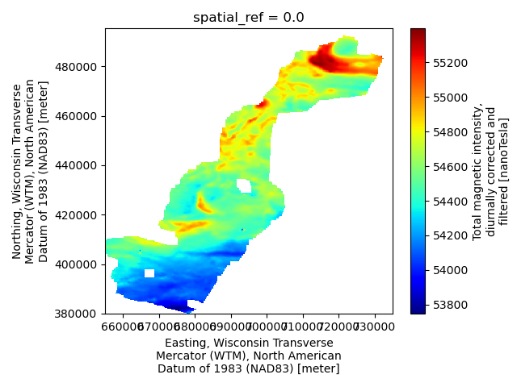
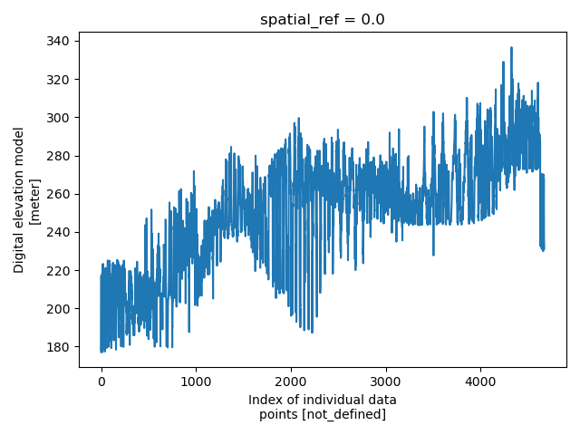

Note
Go to the end to download the full example code.
Multi-dataset Survey
This example demonstrates the typical workflow for creating a GS file for an AEM survey in its entirety, i.e., the NetCDF file contains all related datasets together, e.g., raw data, processed data, inverted models, and derivative products. Specifically, this survey contains:
Minimally processed (raw) AEM data and raw/processed magnetic data provided by SkyTEM
Fully processed AEM data used as input to inversion
Laterally constrained inverted resistivity models
Point-data estimates of bedrock depth derived from the AEM models
Interpolated magnetic and bedrock depth grids
Note: To make the size of this example more managable, some of the input datasets have been downsampled relative to the source files in the data release referenced below.
Dataset Reference: Minsley, B.J, Bloss, B.R., Hart, D.J., Fitzpatrick, W., Muldoon, M.A., Stewart, E.K., Hunt, R.J., James, S.R., Foks, N.L., and Komiskey, M.J., 2022, Airborne electromagnetic and magnetic survey data, northeast Wisconsin (ver. 1.1, June 2022): U.S. Geological Survey data release, https://doi.org/10.5066/P93SY9LI.
import matplotlib.pyplot as plt
from os.path import join
import numpy as np
import gspy
from gspy import Survey
import xarray as xr
Convert the Skytem csv data to NetCDF
Initialize the Survey
# Path to example files
data_path = '..//..//..//..//example_material//example_1'
# Survey metadata file
metadata = join(data_path, "data//WI_SkyTEM_survey_md.yml")
# Establish the Survey
survey = Survey.from_dict(metadata)
data_container = survey.gs.add_container('data', **dict(content = "raw and processed data",
comment = "This is a test"))
1 - Raw Data - Import raw AEM data from CSV-format. Define input data file and associated metadata file
d_data1 = join(data_path, 'data//WI_SkyTEM_2021_ContractorData.csv')
d_supp1 = join(data_path, 'data//WI_SkyTEM_raw_data_md.yml')
# Add the raw AEM data as a tabular dataset
data_container.gs.add(key='raw_data', data_filename=d_data1, metadata_file=d_supp1, system=survey.nominal_system)
print(data_container)
<xarray.DataTree 'data'>
Group: /survey/data
│ Dimensions: ()
│ Data variables:
│ spatial_ref float64 8B 0.0
│ Attributes:
│ content: raw and processed data
│ comment: This is a test
│ type: container
└── Group: /survey/data/raw_data
│ Dimensions: (index: 6785, hm_gate_times: 32, lm_gate_times: 28)
│ Coordinates:
│ spatial_ref float64 8B 0.0
│ * index (index) int32 27kB 0 1 2 3 4 5 ... 6780 6781 6782 6783 6784
│ x (index) float64 54kB 7.243e+05 7.239e+05 ... 6.604e+05
│ y (index) float64 54kB 4.916e+05 4.917e+05 ... 3.866e+05
│ z (index) float64 54kB 176.8 217.3 231.6 ... 276.4 288.7
│ t (index) float64 54kB 4.422e+04 4.422e+04 ... 4.424e+04
│ * hm_gate_times (hm_gate_times) float64 256B 2.886e-05 ... 0.003544
│ * lm_gate_times (lm_gate_times) float64 224B -1.135e-06 ... 0.001394
│ Data variables: (12/34)
│ _60hz_intensity (index) float64 54kB -5.744e-08 -4.722e-08 ... -1.557e-07
│ alt (index) float64 54kB 276.3 270.1 274.2 ... 320.0 331.7
│ anglex (index) float64 54kB 3.284 1.052 2.916 ... -4.419 -4.376
│ angley (index) float64 54kB -0.9891 -1.999 ... -1.013 -1.103
│ base_mag (index) float64 54kB -1e+04 -1e+04 -1e+04 ... -1e+04 -1e+04
│ curr_hm (index) float64 54kB 111.6 111.6 111.5 ... 110.4 110.4
│ ... ...
│ mag_raw (index) float64 54kB 5.481e+04 5.481e+04 ... 5.413e+04
│ n_nad83 (index) float64 54kB 4.916e+05 4.917e+05 ... 3.866e+05
│ n_wgs84 (index) float64 54kB 4.968e+06 4.969e+06 ... 4.866e+06
│ rmf (index) float64 54kB 210.6 210.6 197.3 ... -124.5 -120.3
│ time (index) object 54kB '17:14:42' '17:15:02' ... '15:01:14'
│ tmi (index) float64 54kB 5.482e+04 5.482e+04 ... 5.413e+04
│ Attributes:
│ content: raw data
│ comment: This dataset includes minimally processed (raw) AEM and raw/...
│ type: data
│ structure: tabular
│ mode: airborne
│ method: electromagnetic
│ submethod: time domain
│ instrument: skytem
│ property:
└── Group: /survey/data/raw_data/nominal_system
Dimensions: (gate_times: 22, nv: 2,
lm_gate_times: 28, hm_gate_times: 32,
n_transmitters: 2,
lm_waveform_time: 21,
hm_waveform_time: 36,
lm_loop_vertices: 8, xyz: 3,
hm_loop_vertices: 8, n_receivers: 2,
n_components: 4)
Coordinates:
* gate_times (gate_times) float64 176B 5.636e-05 ...
* nv (nv) int64 16B 0 1
* n_transmitters (n_transmitters) int64 16B 0 1
* lm_waveform_time (lm_waveform_time) float64 168B -0.0...
* hm_waveform_time (hm_waveform_time) float64 288B -0.0...
* xyz (xyz) int64 24B 0 1 2
* lm_loop_vertices (lm_loop_vertices) float64 64B 0.0 ....
* hm_loop_vertices (hm_loop_vertices) float64 64B 0.0 ....
* n_receivers (n_receivers) int64 16B 0 1
* n_components (n_components) int64 32B 0 1 2 3
Data variables: (12/29)
gate_times_bnds (gate_times, nv) float64 352B 2.036e...
lm_gate_times_bnds (lm_gate_times, nv) float64 448B -1....
hm_gate_times_bnds (hm_gate_times, nv) float64 512B 2.8...
transmitter_label (n_transmitters) <U2 16B 'LM' 'HM'
transmitter_area (n_transmitters) float64 16B 342.0 3...
transmitter_base_frequency (n_transmitters) float64 16B 210.0 75.0
... ...
component_receivers (n_components) <U1 16B 'z' 'z' 'x' 'x'
component_sample_rate (n_components) float64 32B 0.1 ... 0.1
component_txrx_dx (n_components) float64 32B -13.25 .....
component_txrx_dy (n_components) float64 32B 0.0 ... 0.0
component_txrx_dz (n_components) float64 32B -2.0 ... 0.0
component_gate_times (n_components) <U13 208B 'LM_gate_ti...
Attributes:
type: system
mode: airborne
method: electromagnetic
submethod: time domain
instrument: skytem 304M
2 - Processed Data - Import processed AEM data from CSV-format. Define input data file and associated metadata file
d_data2 = join(data_path, 'data//WI_SkyTEM_2021_ProcessedData.csv')
d_supp2 = join(data_path, 'data//WI_SkyTEM_processed_data_md.yml')
system = {"skytem_system" : survey["nominal_system"].isel(lm_gate_times=np.s_[1:], hm_gate_times=np.s_[10:]),
"magnetic_system" : survey["magnetic_system"]}
# Add the processed AEM data as a tabular dataset
pd = data_container.gs.add(key='processed_data', data_filename=d_data2, metadata_file=d_supp2, system=system)
3 - Inverted Models -
# Create a new container for models
model_container = survey.gs.add_container('models', **dict(content = "Inverted models",
comment = "This is a test"))
# Import inverted AEM models from CSV-format.
# Define input data file and associated metadata file
m_data3 = join(data_path, 'model//WI_SkyTEM_2021_InvertedModels.csv')
m_supp3 = join(data_path, 'model//WI_SkyTEM_inverted_models_md.yml')
# Add the inverted AEM models as a tabular dataset
model_container.gs.add(key='inverted_models', data_filename=m_data3, metadata_file=m_supp3)
4 - Bedrock Picks - Import AEM-based estimated of depth to bedrock from CSV-format. Define input data file and associated metadata file
d_data4 = join(data_path, 'data//topDolomite_Blocky_LidarDEM.csv')
d_supp4 = join(data_path, 'data//WI_SkyTEM_bedrock_picks_md.yml')
# Add the AEM-based estimated of depth to bedrock as a tabular dataset
data_container.gs.add(key='depth_to_bedrock', data_filename=d_data4, metadata_file=d_supp4)
5 - Derivative Maps -
# We can add arbitrarily named containers to the survey
derived_products = survey.gs.add_container('derived_products', **dict(content = "products derived from other data and models"))
# Import interpolated bedrock and magnetic maps from TIF-format.
# Define input metadata file (which contains the TIF filenames linked to variable names)
m_supp5 = join(data_path, 'data//WI_SkyTEM_mag_bedrock_grids_md.yml')
# Add the interpolated maps as a raster dataset
derived_products.gs.add(key='maps', metadata_file=m_supp5)
Save to NetCDF file
d_out = join(data_path, 'model//WISkyTEM.nc')
survey.gs.to_netcdf(d_out)
The gspy goal is to have the complete survey in a single file. However, we can also save containers or datasets separately.
data_container.gs.to_netcdf('test_datacontainer.nc')
Reading back in
new_survey = gspy.open_datatree(d_out)['survey']
print(new_survey)
<xarray.DataTree 'survey'>
Group: /survey
│ Dimensions: ()
│ Coordinates:
│ spatial_ref float64 8B ...
│ Data variables:
│ survey_information float64 8B ...
│ flightline_information float64 8B ...
│ survey_equipment float64 8B ...
│ Attributes:
│ title: SkyTEM Airborne Electromagnetic (AEM) Survey, Northeast Wis...
│ institution: USGS Geology, Geophysics, and Geochemistry Science Center
│ source: SkyTEM raw data, USGS processed data and inverted resistivi...
│ history: (1) Data acquisition 01/2021 - 02/2021 by SkyTEM Canada Inc...
│ references: Minsley, Burke J., B.R. Bloss, D.J. Hart, W. Fitzpatrick, M...
│ comment: This dataset includes minimally processed (raw) AEM and raw...
│ summary: Airborne electromagnetic (AEM) and magnetic survey data wer...
│ content: survey information (group /survey), raw data (group /survey...
│ created_by: gspy==2.0.0
│ conventions: CF-1.8, GS-2.0
│ type: survey
├── Group: /survey/data
│ │ Dimensions: ()
│ │ Data variables:
│ │ spatial_ref float64 8B ...
│ │ Attributes:
│ │ content: raw and processed data
│ │ comment: This is a test
│ │ type: container
│ ├── Group: /survey/data/raw_data
│ │ │ Dimensions: (index: 6785, hm_gate_times: 32, lm_gate_times: 28)
│ │ │ Coordinates:
│ │ │ spatial_ref float64 8B ...
│ │ │ * index (index) int32 27kB 0 1 2 3 4 5 ... 6780 6781 6782 6783 6784
│ │ │ x (index) float64 54kB ...
│ │ │ y (index) float64 54kB ...
│ │ │ z (index) float64 54kB ...
│ │ │ t (index) float64 54kB ...
│ │ │ * hm_gate_times (hm_gate_times) float64 256B 2.886e-05 ... 0.003544
│ │ │ * lm_gate_times (lm_gate_times) float64 224B -1.135e-06 ... 0.001394
│ │ │ Data variables: (12/34)
│ │ │ _60hz_intensity (index) float64 54kB ...
│ │ │ alt (index) float64 54kB ...
│ │ │ anglex (index) float64 54kB ...
│ │ │ angley (index) float64 54kB ...
│ │ │ base_mag (index) float64 54kB ...
│ │ │ curr_hm (index) float64 54kB ...
│ │ │ ... ...
│ │ │ mag_raw (index) float64 54kB ...
│ │ │ n_nad83 (index) float64 54kB ...
│ │ │ n_wgs84 (index) float64 54kB ...
│ │ │ rmf (index) float64 54kB ...
│ │ │ time (index) <U8 217kB ...
│ │ │ tmi (index) float64 54kB ...
│ │ │ Attributes:
│ │ │ content: raw data
│ │ │ comment: This dataset includes minimally processed (raw) AEM and raw/...
│ │ │ type: data
│ │ │ structure: tabular
│ │ │ mode: airborne
│ │ │ method: electromagnetic
│ │ │ submethod: time domain
│ │ │ instrument: skytem
│ │ │ property:
│ │ └── Group: /survey/data/raw_data/nominal_system
│ │ Dimensions: (gate_times: 22, nv: 2,
│ │ lm_gate_times: 28, hm_gate_times: 32,
│ │ n_transmitters: 2,
│ │ lm_waveform_time: 21,
│ │ hm_waveform_time: 36,
│ │ lm_loop_vertices: 8, xyz: 3,
│ │ hm_loop_vertices: 8, n_receivers: 2,
│ │ n_components: 4)
│ │ Coordinates:
│ │ * gate_times (gate_times) float64 176B 5.636e-05 ...
│ │ * nv (nv) int64 16B 0 1
│ │ * n_transmitters (n_transmitters) int64 16B 0 1
│ │ * lm_waveform_time (lm_waveform_time) float64 168B -0.0...
│ │ * hm_waveform_time (hm_waveform_time) float64 288B -0.0...
│ │ * xyz (xyz) int64 24B 0 1 2
│ │ * lm_loop_vertices (lm_loop_vertices) float64 64B 0.0 ....
│ │ * hm_loop_vertices (hm_loop_vertices) float64 64B 0.0 ....
│ │ * n_receivers (n_receivers) int64 16B 0 1
│ │ * n_components (n_components) int64 32B 0 1 2 3
│ │ Data variables: (12/29)
│ │ gate_times_bnds (gate_times, nv) float64 352B ...
│ │ lm_gate_times_bnds (lm_gate_times, nv) float64 448B ...
│ │ hm_gate_times_bnds (hm_gate_times, nv) float64 512B ...
│ │ transmitter_label (n_transmitters) <U2 16B ...
│ │ transmitter_area (n_transmitters) float64 16B ...
│ │ transmitter_base_frequency (n_transmitters) float64 16B ...
│ │ ... ...
│ │ component_receivers (n_components) <U1 16B ...
│ │ component_sample_rate (n_components) float64 32B ...
│ │ component_txrx_dx (n_components) float64 32B ...
│ │ component_txrx_dy (n_components) float64 32B ...
│ │ component_txrx_dz (n_components) float64 32B ...
│ │ component_gate_times (n_components) <U13 208B ...
│ │ Attributes:
│ │ type: system
│ │ mode: airborne
│ │ method: electromagnetic
│ │ submethod: time domain
│ │ instrument: skytem 304M
│ ├── Group: /survey/data/processed_data
│ │ │ Dimensions: (index: 4671, lm_gate_times: 27, hm_gate_times: 22)
│ │ │ Coordinates:
│ │ │ spatial_ref float64 8B ...
│ │ │ * index (index) int32 19kB 0 1 2 3 4 5 ... 4666 4667 4668 4669 4670
│ │ │ x (index) float64 37kB ...
│ │ │ y (index) float64 37kB ...
│ │ │ z (index) float64 37kB ...
│ │ │ t (index) float64 37kB ...
│ │ │ * lm_gate_times (lm_gate_times) float64 216B 3.65e-07 ... 0.001394
│ │ │ * hm_gate_times (hm_gate_times) float64 176B 5.636e-05 ... 0.003544
│ │ │ Data variables: (12/21)
│ │ │ pindex (index) int64 37kB ...
│ │ │ sline_no (index) float64 37kB ...
│ │ │ e_n83wtm (index) float64 37kB ...
│ │ │ n_n83wtm (index) float64 37kB ...
│ │ │ timestamp (index) float64 37kB ...
│ │ │ record (index) float64 37kB ...
│ │ │ ... ...
│ │ │ rx_altitude (index) float64 37kB ...
│ │ │ rx_altitude_std (index) float64 37kB ...
│ │ │ txrx_dx (index) float64 37kB ...
│ │ │ txrx_dy (index) float64 37kB ...
│ │ │ txrx_dz (index) float64 37kB ...
│ │ │ line_no (index) float64 37kB ...
│ │ │ Attributes:
│ │ │ content: processed data
│ │ │ comment: This dataset includes processed AEM data produced by USGS
│ │ │ type: data
│ │ │ structure: tabular
│ │ │ mode: airborne
│ │ │ method: electromagnetic
│ │ │ submethod: time domain
│ │ │ instrument: skytem
│ │ │ property:
│ │ ├── Group: /survey/data/processed_data/skytem_system
│ │ │ Dimensions: (gate_times: 22, nv: 2,
│ │ │ lm_gate_times: 27, hm_gate_times: 22,
│ │ │ n_transmitters: 2,
│ │ │ lm_waveform_time: 21,
│ │ │ hm_waveform_time: 36,
│ │ │ lm_loop_vertices: 8, xyz: 3,
│ │ │ hm_loop_vertices: 8, n_receivers: 2,
│ │ │ n_components: 4)
│ │ │ Coordinates:
│ │ │ * gate_times (gate_times) float64 176B 5.636e-05 ...
│ │ │ * nv (nv) int64 16B 0 1
│ │ │ * n_transmitters (n_transmitters) int64 16B 0 1
│ │ │ * lm_waveform_time (lm_waveform_time) float64 168B -0.0...
│ │ │ * hm_waveform_time (hm_waveform_time) float64 288B -0.0...
│ │ │ * xyz (xyz) int64 24B 0 1 2
│ │ │ * lm_loop_vertices (lm_loop_vertices) float64 64B 0.0 ....
│ │ │ * hm_loop_vertices (hm_loop_vertices) float64 64B 0.0 ....
│ │ │ * n_receivers (n_receivers) int64 16B 0 1
│ │ │ * n_components (n_components) int64 32B 0 1 2 3
│ │ │ Data variables: (12/29)
│ │ │ gate_times_bnds (gate_times, nv) float64 352B ...
│ │ │ lm_gate_times_bnds (lm_gate_times, nv) float64 432B ...
│ │ │ hm_gate_times_bnds (hm_gate_times, nv) float64 352B ...
│ │ │ transmitter_label (n_transmitters) <U2 16B ...
│ │ │ transmitter_area (n_transmitters) float64 16B ...
│ │ │ transmitter_base_frequency (n_transmitters) float64 16B ...
│ │ │ ... ...
│ │ │ component_receivers (n_components) <U1 16B ...
│ │ │ component_sample_rate (n_components) float64 32B ...
│ │ │ component_txrx_dx (n_components) float64 32B ...
│ │ │ component_txrx_dy (n_components) float64 32B ...
│ │ │ component_txrx_dz (n_components) float64 32B ...
│ │ │ component_gate_times (n_components) <U13 208B ...
│ │ │ Attributes:
│ │ │ type: system
│ │ │ mode: airborne
│ │ │ method: electromagnetic
│ │ │ submethod: time domain
│ │ │ instrument: skytem 304M
│ │ └── Group: /survey/data/processed_data/magnetic_system
│ │ Dimensions: ()
│ │ Data variables:
│ │ sample_rate float64 8B ...
│ │ resolution float64 8B ...
│ │ Attributes:
│ │ type: system
│ │ mode: airborne
│ │ method: magnetic
│ │ submethod: total field
│ │ instrument: cesium vapour
│ └── Group: /survey/data/depth_to_bedrock
│ Dimensions: (index: 82864)
│ Coordinates:
│ spatial_ref float64 8B ...
│ * index (index) int32 331kB 0 1 2 3 4 ... 82860 82861 82862 82863
│ x (index) float64 663kB ...
│ y (index) float64 663kB ...
│ Data variables:
│ id (index) int64 663kB ...
│ e_n83wtm (index) float64 663kB ...
│ n_n83wtm (index) float64 663kB ...
│ br_elevation (index) float64 663kB ...
│ zstd (index) float64 663kB ...
│ origintype (index) int64 663kB ...
│ editdate (index) <U15 5MB ...
│ Attributes:
│ content: bedrock elevation points
│ comment: This dataset includes AEM-derived point estimates of the ele...
│ type: data
│ structure: tabular
│ mode:
│ method:
│ submethod:
│ instrument:
│ property:
├── Group: /survey/models
│ │ Dimensions: ()
│ │ Data variables:
│ │ spatial_ref float64 8B ...
│ │ Attributes:
│ │ content: Inverted models
│ │ comment: This is a test
│ │ type: container
│ └── Group: /survey/models/inverted_models
│ Dimensions: (layer_depth: 40, nv: 2, index: 11677)
│ Coordinates:
│ spatial_ref float64 8B ...
│ * index (index) int32 47kB 0 1 2 3 4 ... 11673 11674 11675 11676
│ * layer_depth (layer_depth) float64 320B 0.375 1.16 2.02 ... 262.6 343.8
│ * nv (nv) int64 16B 0 1
│ x (index) float64 93kB ...
│ y (index) float64 93kB ...
│ z (index) float64 93kB ...
│ t (index) float64 93kB ...
│ Data variables: (12/22)
│ layer_depth_bnds (layer_depth, nv) float64 640B ...
│ pindex (index) int64 93kB ...
│ sline_no (index) int64 93kB ...
│ e_n83wtm (index) float64 93kB ...
│ n_n83wtm (index) float64 93kB ...
│ timestamp (index) float64 93kB ...
│ ... ...
│ RHO_I_STD (index, layer_depth) float64 4MB ...
│ DEP_TOP (index, layer_depth) float64 4MB ...
│ DEP_BOT (index, layer_depth) float64 4MB ...
│ doi_conservative (index) float64 93kB ...
│ doi_standard (index) float64 93kB ...
│ line_no (index) int64 93kB ...
│ Attributes:
│ content: inverted resistivity models
│ comment: This dataset includes inverted resistivity models derived fr...
│ type: model
│ structure: tabular
│ mode: airborne
│ method: electromagnetic
│ submethod: time domain
│ instrument: skytem
│ property: electrical resistivity
└── Group: /survey/derived_products
│ Dimensions: ()
│ Data variables:
│ spatial_ref float64 8B ...
│ Attributes:
│ content: products derived from other data and models
│ type: container
└── Group: /survey/derived_products/maps
Dimensions: (x: 799, nv: 2, y: 1155)
Coordinates:
spatial_ref float64 8B ...
* x (x) float64 6kB 6.551e+05 6.552e+05 ... 7.349e+05
* nv (nv) int64 16B 0 1
* y (y) float64 9kB 4.953e+05 4.952e+05 ... 3.799e+05
Data variables:
x_bnds (x, nv) float64 13kB ...
y_bnds (y, nv) float64 18kB ...
magnetic_tmi (y, x) float64 7MB ...
magnetic_rmf (y, x) float64 7MB ...
bedrock_top_elevation (y, x) float32 4MB ...
bedrock_depth (y, x) float32 4MB ...
Attributes:
content: gridded magnetic and bedrock maps
comment: This dataset includes AEM-derived estimates of the elevation...
type: data
structure: raster
mode: airborne
method: electromagnetic
submethod: time domain
instrument: skytem
property: ['magnetic', 'depth to bedrock']
Plotting
plt.figure()
new_survey['data']['raw_data']['height'].plot()
plt.tight_layout()
pd = new_survey['data']['processed_data']
plt.figure()
pd['elevation'].plot()
plt.tight_layout()
m = new_survey['derived_products']['maps']
plt.figure()
m['magnetic_tmi'].plot(cmap='jet')
plt.tight_layout()
plt.show()
- 
- 

Total running time of the script: (0 minutes 8.767 seconds)